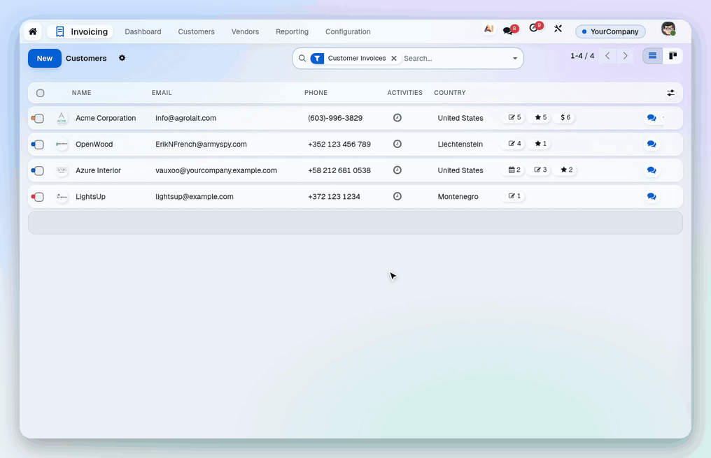

Review without leaving the list.
The record opens beside its list; step through, approve, move on.

Split view, floating chatter, a Back key and an app-like phone layout.
Odoo 20 · Community and Enterprise · needs the Backend Theme Engine and a look such as EOD
The way your team moves through Odoo: records open beside their list, conversations float over the work, one clear way back, and on a phone a tab bar and a thumb-reach action dock.
The record opens beside its list; step through, approve, move on.
The chat key on any card or row floats the conversation over your work.

A Back key, a map of where you are and a Home key on every screen.

Tab bar, stage chips, an action dock and bottom sheets, without installing an app.

Get the whole experience with EOD Suite: the EOD look, Workspace, Home and Focus, and Share on WhatsApp in one install.